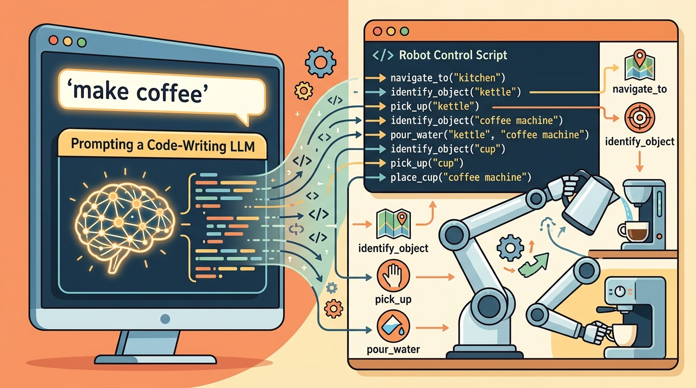

"The model did not lie about the object's location. It simply never noticed that the object had moved. Hallucination in the physical world is a synchronization failure, not a language failure."
Section 33.7

This section builds on the belief-state formalism introduced in section 2.7 and the affordance-grounding approach of SayCan covered in section 33.2. The freshness-gating and verification ideas developed here are extended in section 33.8, which addresses safe action interfaces that depend on reliable state estimates, and recur in Part 10 alongside multi-agent coordination, where one agent's action can silently invalidate another's memory (section 49.1).
Read the figure as a memory-validity audit. A planner may remember prior observations, but physical tasks require timestamps, scope, invalidation rules, and a check that retrieved state still matches the current scene.
Build And Evaluation Checklist
Depth and self-containment. This section must explain why memory in embodied systems is a state-estimation problem, not only a long-context problem. Readers should leave knowing which facts must be grounded and refreshed from sensors.
Production and evaluation contract. The artifact should record remembered facts, their source, freshness, and whether they were later verified or contradicted by perception. Otherwise hallucination remains a vague label.
For Memory, state tracking, and hallucination in physical tasks, name the language interface, grounded world state, executable action contract, and evidence artifact before trusting any claimed improvement.
For Memory, state tracking, and hallucination in physical tasks, write one evidence row recording instruction, world-state estimate, chosen action, verifier result, and failure label. Then identify which field would change first under command misunderstanding.
A robot arm was told to fetch the red cup. Thirty seconds earlier, a person moved it. The arm reached confidently for empty space. The LLM planner had not lied: it had simply never been told the world changed. That gap between a model's remembered state and the actual scene is where most physical task failures live today. As large language models (LLMs) move from writing assistants to robot controllers, their tendency to treat stale context as ground truth becomes a safety issue, not just an accuracy issue. This section shows you how to audit what an embodied agent "remembers," when those memories expire, and how to catch hallucinated state before a gripper acts on it.
This section shows how LLM memory should be paired with explicit state tracking so that past context helps planning without silently overriding new sensor evidence.
The practical question is which memories should live as symbolic facts, which should live as scene state, and how hallucinated memories should be caught before action.
Embodied memory is only useful if it carries provenance and freshness. A remembered object location with no timestamp is not memory; it is a latent bug.
Theory
Let memory items be facts $m_i = (f_i, c_i, t_i)$ with content, confidence, and timestamp. A planner should reason over a belief state $$b_t = p(s_t \mid o_{1:t}, a_{1:t-1}, m_{1:t}),$$ not over free-floating text summaries alone. New observations should update or erase memory items whose confidence is no longer justified.
This formalism becomes practically important in three situations: (1) the robot executes a multi-step task spanning minutes, so the scene can change between steps; (2) multiple agents share the same environment, meaning one agent's action silently invalidates another's memory; (3) the LLM plans at a high abstraction level while low-level controllers run at millisecond rates, creating a temporal gap between language-level "knowledge" and physical reality. In simpler single-step fetch tasks the gap rarely matters. In household or warehouse deployments with moving objects and parallel actors, ignoring the belief-state update rule is the primary source of execution failures that look like hallucination but are actually synchronization failures.
Hallucination in embodied tasks often means one of three things: inventing an object or tool, asserting a stale state as current, or carrying a wrong relational fact across scene changes. The fix is rarely 'better prompting' alone. It is usually a better contract between memory, observation, and verification.
This distinction has been demonstrated empirically. The SayCan system (Ahn et al., 2022) showed that grounding language plans in a value function over robot affordances reduced infeasible action selection, but the remaining failure mode was often stale object state: the model would plan to pick up an item whose location had changed since the last observation. EmbodiedBench (Wang et al., 2025) confirms the pattern at scale: on tasks with hidden state changes between replanning steps, even frontier models drop success rates by 30 to 50 percentage points relative to tasks with static scenes. To put that concretely: a model solving 80 out of 100 static-scene tasks solves only 30 to 56 of the equivalent dynamic-scene tasks, with the sole difference being that an object moved while the planner was not watching. Both results point to the same architectural gap: an LLM that rewrites its plan from scratch each step treats its context window as ground truth, not as a belief that needs freshness gating.
A good memory system separates semantic memory, such as user preference, from dynamic world state, such as object location. The first may persist across episodes; the second should expire quickly or be refreshed from sensors before use.
Worked Example
Code Fragment 1 stores two memories with different freshness and shows how the planner should gate them before use. The example demonstrates why timestamps belong in the memory schema.
# Reject stale world-state memory while keeping durable preference memory.
# Embodied memory should store freshness and source, not just text.
# This keeps old observations from masquerading as current state.
memory = [
{"fact": "user_prefers_blue_mug", "age_s": 600, "durable": True},
{"fact": "red_mug_is_on_counter", "age_s": 45, "durable": False},
]
usable = [m["fact"] for m in memory if m["durable"] or m["age_s"] < 10]
print(usable)The expected output is a memory subset where durable user preferences survive but stale scene claims do not. The point is that embodied memory should grant planning authority only to facts whose lifespan matches the kind of fact they are, not to every retrieved sentence equally.
Set the freshness threshold for dynamic world-state facts to no more than one replanning cycle. If your LLM planner runs every 5 seconds, set max_age_s to 5 in a Pydantic MemoryItem model and validate it at retrieval time rather than in ad-hoc if checks. Using Pydantic means a missing timestamp raises a ValidationError before the planner ever sees the record, catching the schema violation at write time instead of silently letting an undated fact pass as fresh. For semantic memory such as user preferences, omit the expiry field entirely and use a separate model class so the type system itself encodes the distinction.
State stores, graph memories, and vector memories can all hold the facts, but they are only safe in robotics when coupled to freshness metadata and sensor-side verification hooks. The library can manage retrieval; it cannot decide which physical facts are still true.
Practical Recipe
- Store memory items with source, timestamp, confidence, and type.
- Separate durable preferences from dynamic world-state facts.
- Refresh or invalidate dynamic facts before high-consequence actions.
- Never let retrieved text bypass a verifier when the action depends on current geometry.
- Log contradictions between memory and observation as first-class events.
Algorithm: Freshness-Gated Belief Update for Embodied Memory
Input: Memory store $\mathcal{M} = \{m_i = (f_i, c_i, t_i)\}$ (facts, confidences, timestamps); new observation $o_t$ at time $t$; freshness threshold $\tau$; belief state $b_{t-1}$; planned action $a$
Output: Updated belief state $b_t$; validated memory subset $\mathcal{M}_{\text{valid}}$; contradiction log $\mathcal{C}$
- Partition $\mathcal{M}$ into durable facts $\mathcal{M}_D$ (user preferences, invariants) and dynamic facts $\mathcal{M}_W$ (object locations, scene state).
- For each dynamic fact $m_i \in \mathcal{M}_W$, compute age $\delta_i = t - t_i$. Retain $m_i$ only if $\delta_i \le \tau$; mark expired facts as stale and exclude them from $\mathcal{M}_{\text{valid}}$.
- Apply the Bayesian belief update: $b_t = p(s_t \mid o_{1:t},\, a_{1:t-1},\, \mathcal{M}_{\text{valid}})$, giving higher weight to sensor evidence $o_t$ than to any single memory item $m_i$ when they conflict.
- For each retained fact $m_i \in \mathcal{M}_{\text{valid}}$, check consistency with $o_t$. If $m_i$ contradicts $o_t$ beyond tolerance $\epsilon$, append $(m_i, o_t, t)$ to contradiction log $\mathcal{C}$ and reduce $c_i \leftarrow \alpha \cdot c_i$ with decay $\alpha \in (0,1)$.
- For action $a$ that depends on a geometric or relational world-state fact, require $c_i \ge c_{\min}$ and $\delta_i \le \tau$ before granting planning authority. Reject $a$ and request sensor refresh otherwise.
- If a sensor refresh is triggered, issue a perception query $\pi_{\text{verify}}$ targeting the specific object or relation that $a$ depends on, then return to step 2 with the updated observation.
- Log the selected action $a$, the supporting facts $\mathcal{M}_{\text{valid}}$, and any contradiction events in $\mathcal{C}$ as a single provenance record before execution.
- After execution, record the observed outcome $o_{t+1}$ and update $c_i$ for all facts whose truth value can now be confirmed or refuted by $\nabla$-graded sensor feedback.
The easiest hallucination to miss is not a novel object. It is a plausible but stale memory, such as believing the mug is still on the counter after another agent already moved it.
Students often assume that giving the LLM a longer context window, or prompting it more carefully, will fix embodied hallucination. This is wrong because the root cause is not a language problem: the model's context was accurate when it was written, then the physical scene changed and the context was not updated. No amount of prompt engineering refreshes a stale observation. The correct mental model is that embodied memory is a state-estimation problem: every world-state fact must carry a timestamp and a freshness threshold, must be re-verified by sensors before a high-consequence action, and must be expired rather than carried silently across replanning cycles.
A household robot may remember that the user prefers tea in the blue mug across many days, but it should not remember that the blue mug is on the left shelf unless that fact was refreshed by recent perception. One memory is durable preference; the other is dynamic scene state.
Embodied hallucination is often just nostalgia with a manipulator attached.
Three active lines of work are pushing embodied memory beyond the stale-context problem. First, persistent 3D semantic memory with LLM querying: systems such as OpenFMNav (Kuang et al., 2024, arXiv 2409.03992) and SpatialBot (Cai et al., 2024) build spatially indexed object maps that survive across episodes; the LLM planner issues natural-language queries against the map rather than against its context window, so stale context cannot override fresh geometry. The active research question is how to merge map updates from multiple traversals without accumulating ghost objects. Second, online world-model verification before action execution: work from Google DeepMind's robotics group and the RT-2 follow-on line (2024-2025) suggests that a lightweight video-prediction head may flag when the observed pre-action frame diverges from what the planner expected, halting execution before a grasp commits rather than after; as of 2025, the open challenge is keeping prediction latency below one replanning cycle on embedded hardware, and no single consolidated benchmark yet quantifies this gain across platforms. Third, calibrated hallucination detection for long-horizon plans: EMBODIED-RAG (Min et al., 2024, CoRL 2024) demonstrates retrieval-augmented planning where each retrieved memory item carries a confidence score derived from the cosine similarity between the query embedding and the stored observation embedding, giving the planner a principled signal for when to request a sensor refresh rather than acting on a low-confidence recall. An open problem well-suited to a PhD dissertation: current freshness-gating schemes treat time as the only staleness signal, but object volatility varies; a cup is stable for hours while a closing gripper makes neighboring objects volatile in milliseconds. Designing a volatility-aware memory expiry model that learns per-object-class and per-action-type expiry rates from trajectory data, and integrating it with a replanning loop that selectively refreshes only the volatile subset of memories before each action, remains unsolved and directly limits deployment of LLM planners in dynamic shared workspaces.
Can you list one fact in your system that should persist across sessions and one that should expire within seconds unless perception reconfirms it?
This section connects directly to classical filtering and simultaneous localization and mapping (SLAM). The novelty is that language memories and symbolic task facts must join the same belief-management discipline as geometric state. Otherwise the planner treats a ten-minute-old caption and a ten-millisecond-old sensor reading as equally authoritative.
That is also why hallucination should be decomposed. A model may hallucinate semantically, but many embodied 'hallucinations' are actually stale-state propagation errors, not fabricated facts. Better memory schemas, not bigger models, are often the right fix.
Why stale-state propagation matters physically: a software agent that acts on outdated information simply returns a wrong answer. A robot that acts on outdated information applies force to the wrong place. Grasping empty space strains the wrist joint; commanding a mobile base toward a now-occupied aisle causes a collision. The physical world does not tolerate the silent correction that a language model can silently re-generate. Irreversible motion makes memory freshness a safety constraint, not merely an accuracy concern.
How propagation happens mechanically: the LLM context window is populated once per replanning cycle. Facts written at cycle $k$ persist verbatim until the next cycle, so any action executed between cycles treats those facts as current even if the scene changed. When the planner selects an action, it scores candidates against the context-window state, not against the live sensor stream. The stale fact therefore receives the same logit weight as a just-observed one, because the attention mechanism has no freshness signal to down-weight it. The propagation path is: observation written to context at $t_k$, scene changes at $t_k + \delta$, planner reads context at $t_{k+1}$ without noticing $\delta$, action executes against the old state.
Think of a navigator using a paper chart marked in pencil. Each time the ship takes a position fix, the navigator erases the old dot and draws a new one. If the navigator stops updating the chart but keeps steering by it, every course correction is computed against a position the ship occupied minutes ago. The longer the gap between fixes, the further the pencil dot drifts from reality, and a confident, mathematically correct heading plotted from that dot still drives the ship onto rocks. The LLM context window is that pencil dot: perfectly accurate when written, silently wrong the moment the world moves on without a new fix.
| Tool or Library | Role in the Topic | Builder Advice |
|---|---|---|
| LangGraph or explicit state graph | Planner-visible memory state. | Use it when memory items should change planner behavior in transparent ways. |
| Semantic map or object tracker | Grounded dynamic world state. | Use it when remembered object locations must be refreshed from sensors. |
| Vector store with metadata | Retrieval of durable semantic context. | Use it for user preferences or long-range task summaries, not raw geometry. |
| Pydantic schemas | Typed memory records with freshness fields. | Use them to prevent planner logic from consuming untyped memory blobs. |
| Verifier layer | Checks remembered facts against observation. | Use it whenever an action depends on the present physical world. |
Code Fragment 2 stores a memory record with provenance and freshness. This is the minimum structure needed to talk coherently about embodied hallucination instead of merely complaining that the agent 'made something up.'
- Tag each memory by type: preference, world state, task progress, or explanation.
- Attach timestamps and evidence sources to every remembered fact.
- Force memory retrieval to pass through a fact-validity gate before execution.
- Record contradiction events when perception and memory disagree.
- Evaluate memory systems on tasks with delayed execution and hidden state changes.
The expected output is a provenance-rich memory record that blocks direct action because the scene fact is too old. This is exactly the kind of trace you want before calling a behavior a hallucination, since the deeper mechanism is often stale world state rather than fabricated semantics.
When memory-rich agents fail, check whether the wrong fact was retrieved, whether the fact was stale, or whether the verifier failed to challenge it. Those paths lead to very different architectural fixes.
Embodied memory is valuable only when it behaves like a state-estimation aid rather than an untyped bag of text.
Design a memory schema for an embodied assistant that stores both user preferences and object locations. Include the fields needed to keep one durable and the other freshness-limited.
EmbodiedBench is useful for evaluating long-horizon embodied tasks where memory and replanning matter.
LangGraph is a practical reference for explicit stateful agent memory rather than opaque prompt concatenation.
GTSAM is a classical reference for state-estimation discipline, useful here as a conceptual comparison for how embodied memory should treat uncertainty and updates.
Project Ideas
Beginner (weekend): Staleness-aware memory logger for a simulated fetch task. Build a Python script that runs a tabletop pick-and-place scenario in PyBullet, stores each observed object location as a timestamped Pydantic record, and prints a warning whenever the planner tries to act on a record older than a configurable threshold. The key challenge is deciding the right freshness threshold: too short and the planner stalls waiting for sensor refreshes; too long and stale facts slip through.
Intermediate (1 to 2 weeks): Freshness-gated LLM planner with a ROS2 object tracker. Wire a ROS2 node that subscribes to a depth-camera topic, maintains a semantic object map with per-object observation timestamps, and exposes a service that an LLM planner (using LangGraph for state management) must call before each manipulation step. Integrate with a MuJoCo or Isaac Lab simulation so that objects move during plan execution and the system must detect the stale-state contradiction and replan. The key challenge is keeping the ROS2 sensor pipeline, the LangGraph state graph, and the MuJoCo physics step synchronized without a blocking wait that stalls real-time control.